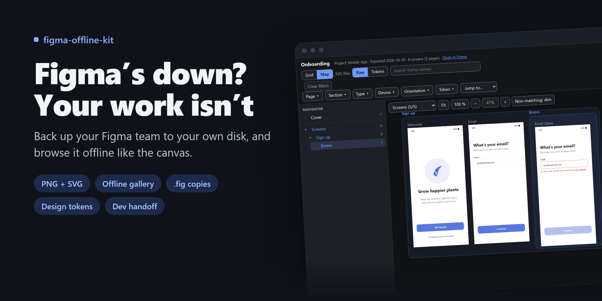

figma-offline-kit demo
What the kit makes from a Figma team, shown with a made-up app called Bloom. Everything here also opens from your own disk, with no internet.

What the kit makes from a Figma team, shown with a made-up app called Bloom. Everything here also opens from your own disk, with no internet.